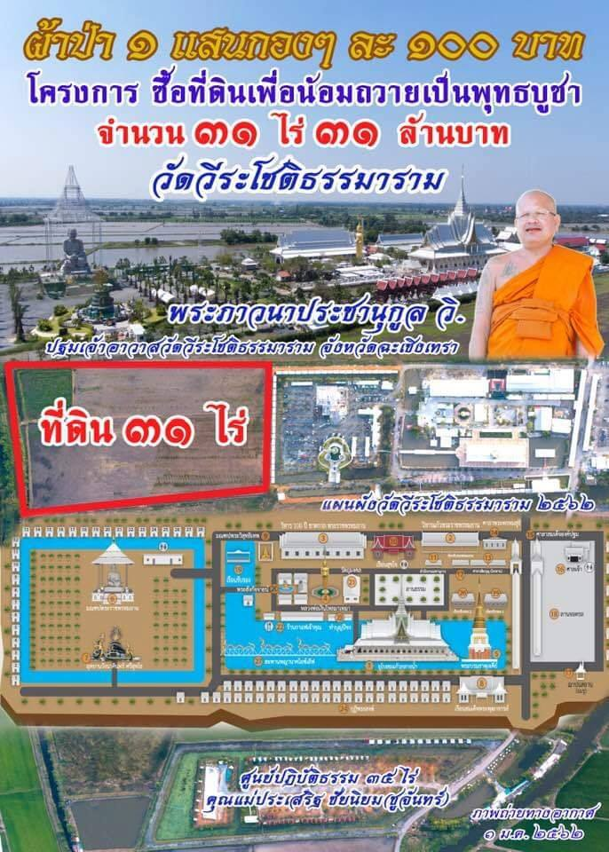
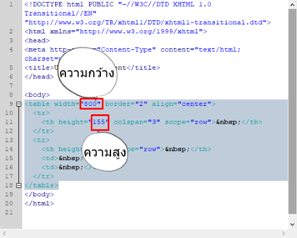
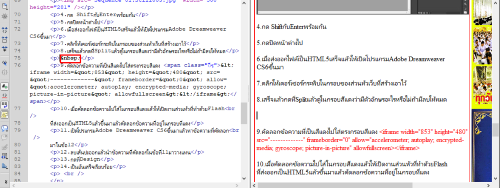
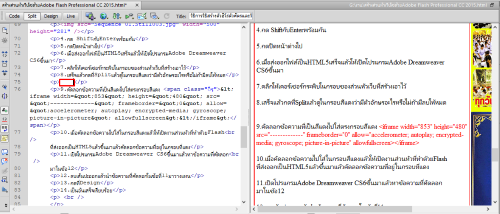
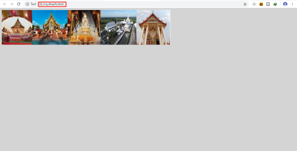
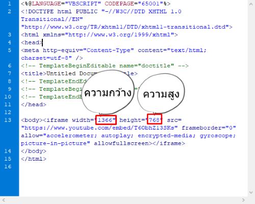

#วิธีการวิธีสร้างตัวฮีโร่ตัวศัตรและวิธีใส่Behaviors Construct 2
*ช่วงแรกจะเป็นโฆษณา วีดีโอนี้จะอยู่ช่วงหลัง*

วิธีทํา...
1.เปิดโปรแกรมAdobe Dreamweaver CS6 ขึ้นมาแล้วสร้างส่วนหัวของเว็บขึ้นมา
2.กําหนดขนาดไซส์งานใน Flash โดยใช้สูตรดังนี้
-ความกว้างของงานใน Flashหาได้โดยนําความกว้างของหัวเว็บที่ออกแบบไว้
มาลบ25ก็จะได้ความกว้างของงานใน Flash
-ความสูงของงานใน Flashหาได้โดยนําความสูงของหัวเว็บที่ออกแบบไว้
มาลบ20ก็จะได้ความสูง
*หาความกว้างและความสูงของส่วนหัวในDreamweaverได้โดย
คุมดําส่วนหัวแล้วกดที่Designจะขึ้นภาพดังนี้
*

3.เมื่อทําส่วนหัวใน Flashเสร็จให้เรียบร้อยแล้วส่งออกไฟล์เป็น HTML5โดยทําตามภาพ


4.เมื่อส่งออกเสร็จแล้วให้กด ShiftกับEnterพร้อมกัน
5.กดปิดหน้าต่างไป
6.เมื่อส่งออกไฟล์เป็นHTML5เสร็จแล้วให้เปิดโปรแกรมAdobe Dreamweaver CS6ขึ้นมา
7.คลิกให้เคอร์เซอร์กระพิบในกรอบของส่วนหัวเว็บที่สร้างเอาไว้
8.เสร็จแล้วกดที่Splitแล้วดูในกรอบสีแดงว่ามีตัวอักษรอะไรหรือไม่ถ้ามีลบให้หมด

9.คัดลอกข้อความที่เป็นสีแดงไปใส่ตรงกรอบสีแดง <iframe width="853" height="480" src="-------------" frameborder="0" allow="accelerometer; autoplay; encrypted-media; gyroscope; picture-in-picture" allowfullscreen></iframe>

10.เมื่อคัดลอกข้อความไปใส่ในกรอบสีแดงแล้วให้เปิดงานส่วนหัว
ที่ทําด้วยFlashที่ส่งออกเป็นHTML5แล้วขึ้นมาแล้วคัดลอกข้อความที่
อยู่ในกรอบที่แดง

11.เปิดโปรแกรมAdobe Dreamweaver CS6ขึ้นมาแล้วหาข้อความที่คัดลอก
มาในข้อ9
12.ลบเส้นปะออกแล้วนําข้อความที่คัดลอกในข้อที่10มาวางแทน
13.ปรับขนาดความกว้างและความสูงให้เท่ากับกรอบหัวเว็บที่สร้างไว้

14.กดที่Design
15.เป็นอันเสร็จเรียบร้อย
*ถ้าไม่เข้าใจดูวีดีโอข้างบนได้*
วัดวีรโชติธรรมมาราม